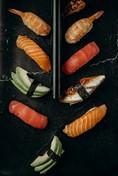
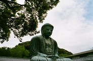

Hallo!
Hallo wij vertellen u over de tradities, de architectuur en de sport in Japan
Wij hopen dat deze website veel informatie geeft over Japan, als je meer informatie wilt kan je het altijd nog opzoeken op http://www.google.com of http://www.Bing.com.
Tradities
Japan is een traditioneel land en heeft nog steeds oude tradities. In Japan houdt de mensen in dat je geen schoenen of slippers op tatami-matten draagt en dat je in het openbaar geen neus hebt. Je kunt de eetstokjes ook rechtop in de rijst zetten, want dit is het voedsel van de doden. Daarnaast is dansen na middernacht niet gebruikelijk en vanwege de lage criminaliteit gebruikt de politie rubberen kogels in plaats van gewone kogels.  De bekendste ceremonie in Japan is de Japanse theeceremonie. In dit geval is het drinken van thee een kunstvorm geworden. Het bestaat uit vele opeenvolgende handelingen om ervoor te zorgen dat u optimaal van een kopje thee kunt genieten. Theeceremonie is erg belangrijk! In de Japanse cultuur wordt 4 beschouwd als het ongelukkige getal. Daarom is er bijna geen knop op de vierde verdieping in de lift. Ga dan verder met tellen of bel de basis 3A. Respect voor ouderen en het niet opdringen van iets zijn een belangrijk onderdeel van de Japanse cultuur. In Japan is het ook doodnormaal dat kinderen het klaslokaal met elkaar opruimen, zodat de juf, meester of schoonmaker dit niet hoeft te doen. Dit doen ze elke dag aan het einde van de les.
Architectuur
Japanse architectuur verschilde van dynastie en was oorspronkelijk gebaseerd op Chinese architectuur. De boeddhistische tempel Horyu-ji-tempel wordt beschouwd als een van de vroege voorbeelden van Japanse architectuur. Het gebouw stond in 1993 op de Werelderfgoedlijst van UNESCO. De huidige architectuur is gebaseerd op de architectuur van de Edo-periode (1750-1886), maar wordt tegenwoordig ook beïnvloed door vele westerse en moderne tijden. Als je binnen een traditionele japanse huis gaat zul je in een kamer komen waar een byōbu is, een typisch Japans scherm met Japanse kalligrafie erop. Tokonoma is ook een Japanse ontvangstruimte of theesalon die oorspronkelijk in huizen werd gebruikt. In het verleden werden hier vaak decoratieve objecten geplaatst die als een belangrijk onderdeel van het interieur werden beschouwd. De Japanse tuin is ook een belangrijk onderdeel van het huis. Zo'n tuin bevat meestal een vijver met koi en schildpadden. Er zijn verschillende soorten Japanse tuinen, zoals Paradise Garden, Tea Garden en Rock Garden. Elementen van Japanse tuinen zijn onder meer lantaarns (tōrō) en stenen leeuwen (shishi-odoshi).
Sport
Sumo wordt in Japan als een traditionele nationale sport beschouwd. Japanse vechtsporten zoals karate, judo en kendo zijn ook traditionele sporten. Deze sporten zijn nog steeds populair in het land en hebben hun eigen weg over de hele wereld gevonden. Er werden nog verschillende wedstrijden gehouden en trokken veel aandacht. Basketbal en voetbal zijn ook erg populair in het land. Het land was samen met Zuid-Korea gastheer van de FIFA Wereldbeker 2002. Motorsporten zijn ook erg populair in het land. Motorsport wordt ondersteund door autofabrikanten zoals Honda en Toyota. De Japanse Grand Prix is de bekendste voetbalwedstrijd in Japan.  Japan mocht drie Olympische Spelen. De eerste waren de Olympische Zomerspelen van 1964 in Tokio, de tweede waren de Olympische Winterspelen van Sapporo van 1972 en de derde waren de Olympische Winterspelen van Nagano in 1998. Het land organiseert in 2020 de Olympische Spelen in de hoofdstad Tokio. Tokio wordt de eerste stad in Azië waar tweemaal de Olympische Zomerspelen plaatsvinden.